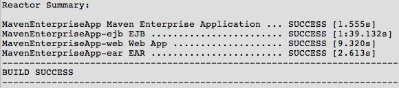

Apache NetBeans (incubating)
Apache NetBeans (incubating)Just released!
Mavenを使用したエンタープライズ・アプリケーションの作成
| This tutorial needs a review. You can help us review it. |
このチュートリアルでは、NetBeans IDEとMaven原型を使用して、単純なエンタープライズ・アプリケーションを作成する方法を示します。また、IDEを使用してMavenアプリケーションを作成およびビルドする方法についても説明し、そのヒントを示します。
このチュートリアルでは、EARアーカイブとしてパッケージ化され、GlassFish Server Open Source Edition 3にデプロイされるエンタープライズ・アプリケーションを作成します。アプリケーションの作成には、新規プロジェクト・ウィザードでMavenエンタープライズ・アプリケーション原型を使用します。アプリケーションにはEJBプロジェクトが含まれますが、これには持続エンティティ・クラス、メッセージ駆動型BeanおよびエンティティのセッションBeanファサードが含まれます。アプリケーションには、2つのサーブレットからなる1つのWebプロジェクトも含まれます。
チュートリアルの課題

Figure 1. このページの内容は、NetBeans IDE 7.2、7.3、7.4および8.0に適用されます
このチュートリアルに従うには、次のソフトウェアとリソースが必要です。
| ソフトウェアまたはリソース | 必須バージョン |
|---|---|
7.2、7.3、7.4、8.0、Java EEバージョン |
|
バージョン7または8 |
|
GlassFish Server Open Source Edition |
4.x |
前提条件
このドキュメントは、次のテクノロジについて基本的な知識またはプログラミング経験を持つ読者を想定して書かれています。
-
Javaプログラミング
-
NetBeans IDE
このチュートリアルを開始する前に、必要に応じて次のドキュメントをお読みください。
終了したプロジェクトのZIPアーカイブはダウンロードできます。
IDEでのMavenの使用
NetBeans IDEには、Mavenのサポートが完全に統合されています。Mavenフレームワークを使用するプロジェクト開発は、Antでのプロジェクト開発とほぼ同じです。ただし、Mavenによるプロジェクトのビルド方法および依存性の処理方法には、いくつかの違いがあります。次のヒントは、Mavenアプリケーションを初めて作成する場合に発生するいくつかの問題を回避するのに役立ちます。
Mavenの設定の確認
これが初めてのMavenプロジェクトである場合は、「オプション」ウィンドウでMavenの構成設定を確認します。MavenはIDEにバンドルされており、IDEをインストールするとインストールされます。
-
IDEで「オプション」ウィンドウを開きます(「ツール」→「オプション」、Macの場合は「NetBeans」→プリファレンス)。
-
「オプション」ウィンドウで「Java」カテゴリを選択し、「Maven」タブをクリックします。
-
「Mavenのホーム」が指定されていることを確認します。
IDEにバンドルされているMavenバージョンを使用することも、ローカルのMavenインストール(2.0.9以降が必要)の場所を指定することもできます。
-
「OK」をクリックして「オプション」ウィンドウを閉じます。
注意:
-
Mavenサポートは、IDEでJavaが有効になっている場合に自動的に有効になります。Java EEプラグインが有効になっていない場合は、有効にする必要があります。
Mavenリポジトリの更新
ローカルおよびリモートのMavenリポジトリは、コード補完およびプロジェクトのビルド時に使用されます。プロジェクトの開発時に、必要な任意のアーティファクトをすぐに使用できるように、Mavenリモート・リポジトリの索引を更新しておきます。「オプション」ウィンドウの「Maven」タブでは、IDEが更新を確認する頻度を構成できます。「サービス」ウィンドウから、更新の有無を即時確認でき、ローカルおよびリモートのMavenリポジトリを調べることができます。
-
「ウィンドウ」>「サービス」を選択し、「サービス」ウィンドウを開きます。
-
「サービス」ウィンドウで「Mavenリポジトリ」ノードを展開します。
-
リポジトリ・ノードを展開してアーティファクトを表示します。
-
リポジトリ・ノードを右クリックし、ポップアップ・メニューで「索引の更新」を選択します。
「索引を更新」をクリックすると、各Mavenリモート・リポジトリの最新の索引の有無が確認され、ダウンロードされます。索引は、リポジトリ内に存在するアーティファクトの現在の状態を示し、アプリケーションで使用できるアーティファクトへの参照を提供するために使用されます。デフォルトでは、アーティファクトが明示的に要求されないかぎり、リポジトリからアーティファクトはダウンロードされません。
アーティファクトを検索するには、「サービス」ウィンドウで「Mavenリポジトリ」ノードを右クリックし、「検索」を選択します。
注意:
-
索引のサイズが非常に大きく、すべてを更新するのに時間がかかる可能性があります。
-
7.1以前のNetBeans IDEを使用している場合は、「ウィンドウ」>「その他」>「Mavenリポジトリ・ブラウザ」を選択し、「Mavenリポジトリ・ブラウザ」ウィンドウの上部にある「索引の更新」( image::images/maven-refreshrepo.png[title="「索引を更新」ボタン"] )をクリックする必要があります。
NetBeans IDEでのMavenの使用に関する詳細は、Hibernateを使用したMaven Swingアプリケーションの作成チュートリアルのMavenの構成の項およびNetBeans IDEでのApache Mavenのベスト・プラクティスを参照してください。
Mavenエンタープライズ・アプリケーション・プロジェクトの作成
この課題の目標は、IDEにバンドルされたMavenエンタープライズ・アプリケーションの原型を使用して、エンタープライズ・アプリケーション・プロジェクトを作成することです。エンタープライズ・アプリケーションの原型によって、EJBプロジェクトおよびWebアプリケーション・プロジェクトも作成されます。
IDEの新規プロジェクト・ウィザードには、いくつかのMaven原型が含まれます。これらを使用すると、エンタープライズ・アプリケーション・プロジェクト(EAR)、Webアプリケーション・プロジェクト(WAR)、EJBモジュール・プロジェクト(JAR)などの一般的なNetBeansプロジェクト・タイプを簡単に作成できます。このウィザードを使用すると、登録済のリモート・リポジトリ内の原型からプロジェクトを作成することもできます。
-
メイン・メニューから「ファイル」>「新規プロジェクト」([Ctrl]-[Shift]-[N]、Macの場合は[⌘]-[Shift]-[N])を選択します。
-
「Maven」カテゴリから「エンタープライズ・アプリケーション」を選択します。「次」をクリックします。 image::images/maven-newproject1.png[title="新規プロジェクト・ウィザードのMavenエンタープライズ・アプリケーションのプロジェクト・タイプ"]
-
「プロジェクト名」として「MavenEnterpriseApp」と入力し、プロジェクトの場所を設定します。
-
(オプション)アーティファクトの詳細を変更します。「次」をクリックします。 image::images/maven-newproject2.png[title="新規プロジェクト・ウィザードのMavenプロジェクトの詳細"]
-
サーバーとして「GlassFish Server」を選択します。
-
「Java EEバージョン」を「Java EE 6」または「Java EE 7」に設定します。
-
「EJBモジュールを作成」および「Webアプリケーション・モジュールを作成」を選択します。「終了」をクリックします。
「終了」をクリックすると、Mavenエンタープライズ・アプリケーション原型から次のプロジェクトが作成されます。
-
EJB。(MavenEnterpriseApp-ejb) EJBプロジェクトには通常、ソース・コードおよびアプリケーションのビジネス・ロジックが含まれます。EJBプロジェクトはEJB JARアーカイブとしてパッケージ化されます。
-
Webアプリケーション。(MavenEnterpriseApp-web) Webアプリケーション・プロジェクトには通常、アプリケーションのプレゼンテーション・レイヤー(JSFページやJSPページなど)およびサーブレットが含まれます。Webアプリケーション・プロジェクトには、ソース・コードおよびビジネス・ロジックが含まれる場合もあります。Webアプリケーション・プロジェクトはWARアーカイブとしてパッケージ化されます。
-
アセンブリ。(MavenEnterpriseApp)アセンブリ・プロジェクトは、EJBアーカイブおよびWARアーカイブからEARアーカイブをアセンブルするために使用されます。アセンブリ・プロジェクトには、ソースが含まれていません。
-
エンタープライズ・アプリケーション。(MavenEnterpriseApp-ear)エンタープライズ・アプリケーション・プロジェクトには、ソースが含まれていません。エンタープライズ・アプリケーションに含まれるのはPOMファイル(
pom.xml)のみで、これにはエンタープライズ・アプリケーションに含まれるモジュールの詳細が記述されています。

Figure 2. 生成されたプロジェクトを示す「プロジェクト」ウィンドウ
エンタープライズ・アプリケーション・プロジェクトの作成後、使用できない依存性があると、エンタープライズ・アプリケーション・プロジェクトにバッジが表示されます。MavenEnterpriseApp-earプロジェクトの「依存性」ノードを展開すると、クラスパス上に必要なライブラリが欠落していないかどうかを確認できます。エンタープライズ・アプリケーション・プロジェクトはJARおよびWARに対して依存性がありますが、これらはEJBプロジェクトおよびWebプロジェクトのコンパイル後にパッケージ化され、使用可能になります。 MavenEnterpriseApp-ejb および MavenEnterpriseApp-web が依存性として一覧表示されていることがわかります。
ステータス・バーにMavenアイコンが表示され、これをクリックしてプライミング・ビルドを実行し、欠落している依存性を解決できる場合があります。

Figure 3. ステータス・バーのMavenアイコンを使用して実行できるプライミング・ビルド
EJBプロジェクトのコーディング
EJBプロジェクトには、アプリケーションのビジネス・ロジックが含まれます。このアプリケーションでは、GlassFishコンテナはJava Transaction API (JTA)を使用してトランザクションを管理します。このチュートリアルでは、EJBプロジェクトで、エンティティ・クラス、メッセージ駆動型Beanおよびエンティティ・クラスのセッション・ファサードを作成します。
持続性ユニットの作成
この課題では、EJBプロジェクトで持続性ユニットを作成します。持続性ユニットは、データベース接続の詳細、およびトランザクションの管理方法を指定します。このアプリケーションでは、GlassFishサーバーでトランザクションを管理するため、新規持続性ユニット・ウィザードでJTAを指定します。
持続性ユニットを作成するには、次の手順を行います:
-
EJBプロジェクト・ノードを右クリックし、ポップアップ・メニューから「新規」>「その他」を選択して、新規ファイル・ウィザードを開きます。
-
「持続性」カテゴリから「持続性ユニット」を選択します。「次」をクリックします。
-
「新規持続性ユニット」ダイアログ・ボックスで、「持続性プロバイダ」として「EclipseLink」を選択します。
-
データ・ソースを選択します(たとえば、JavaDBを使用する場合は
jdbc/sampleを選択)。
データ・ソース jdbc/sample は、IDEおよびGlassFishサーバーのインストール時にIDEにバンドルされますが、別のデータベースを使用する場合は他のデータ・ソースを指定することもできます。
他のデフォルト・オプション(持続性ユニット名、EclipseLink持続性プロバイダ)はそのまま使用できます。
-
「Java Transaction APIを使用」が選択されており、「表生成戦略」が「作成」に設定されていることを確認します。これにより、アプリケーションのデプロイ時に、エンティティ・クラスに基づいて表が作成されます。「終了」をクリックします。 image::images/maven-persistenceunit.png[title="新規持続性ユニット・ウィザード"]
「終了」をクリックすると、XMLファイル persistence.xml が作成され、エディタでこのファイルが開かれます。「プロジェクト」ウィンドウでは、 「その他のソース」>「src/main/resources」>「META-INF」 ディレクトリ内で、このファイルが作成されたことを確認できます。このファイルには、データベースとの接続、およびトランザクションの管理方法に関する詳細が記述されています。エディタで「ソース」タブをクリックすると、次のような持続性ユニットの詳細を表示できます。
...
<persistence-unit name="com.mycompany_MavenEnterpriseApp-ejb_ejb_1.0-SNAPSHOTPU" transaction-type="JTA">
<provider>org.eclipse.persistence.jpa.PersistenceProvider</provider>
<jta-data-source>jdbc/sample</jta-data-source>
<exclude-unlisted-classes>false</exclude-unlisted-classes>
<properties>
<property name="eclipselink.ddl-generation" value="create-tables"/>
</properties>
</persistence-unit>トランザクション・タイプとして JTA が指定されていること、およびアプリケーションが登録済データ・ソース jdbc/sample を使用することを確認できます。
エンティティ・クラスの作成
この課題では、EJBプロジェクトで、データベースに維持されるオブジェクトを表すエンティティ・クラスを作成します。NewsEntityエンティティ・クラスを作成するには、次の手順を行います:
-
「プロジェクト」ウィンドウでEJBモジュールを右クリックし、「新規」>「その他」を選択して新規ファイル・ウィザードを開きます。
-
「持続性」カテゴリから「エンティティ・クラス」を選択します。「次」をクリックします。
-
クラス名に「NewsEntity」と入力します。
-
「パッケージ」に「ejb」と入力し、「主キーの型」は「Long」のままにします。「終了」をクリックします。
「終了」をクリックすると、エンティティ・クラス NewsEntity.java がソース・エディタに表示されます。ソース・エディタで次の手順を実行し、いくつかのフィールドを追加します。
-
このクラスに次のフィールド宣言を追加します。
private String title;
private String body;-
ソース・エディタ内のクラス定義の間を右クリックし、「コードを挿入」([Alt]-[Insert]、Macの場合は[Ctrl]-[I])>「取得メソッドおよび設定メソッド」を選択します。
-
「取得メソッドおよび設定メソッドの生成」ダイアログ・ボックスで、
bodyフィールドおよびtitleフィールドを選択します。「生成」をクリックします。 -
変更内容をクラスに保存します。
メッセージ駆動型Beanの作成
この課題では、EJBプロジェクトでメッセージ駆動型Beanを作成します。メッセージ駆動型Beanは、非同期でのメッセージ交換を可能にするエンタープライズBeanです。NewsAppアプリケーションは、メッセージ駆動型Beanを使用して、Webモジュール内でサーブレットがキューに送信するメッセージの受信および処理を行います。
アプリケーションでメッセージ駆動型Beanを使用するには、Beanによって使用されるコネクタ・リソースをサーバーに登録する必要があります。GlassFishサーバーにデプロイする場合、管理コンソールを使用してサーバー上にリソースを直接作成できますが、 glassfish-resources.xml ディスクリプタ・ファイルに詳細を指定することでデプロイメント時にリソースを作成することもできます。アプリケーションがサーバーにデプロイされると、サーバーはディスクリプタ・ファイルに基づいてリソースを登録します。IDEの新規ファイル・ウィザードを使用してメッセージ駆動型Beanを作成する場合、ディスクリプタ・ファイル内の要素がIDEによって生成されます。
Mavenプロジェクトでは、「ファイル」ウィンドウのプロジェクト・ノードの下の src/main/setup ディレクトリに glassfish-resources.xml ファイルがあります。
-
「プロジェクト」ウィンドウでEJBモジュールを右クリックし、「新規」>「その他」を選択して新規ファイル・ウィザードを開きます。
-
「Enterprise JavaBeans」カテゴリから「メッセージ駆動型Bean」を選択します。「次」をクリックします。
-
EJB名に「NewMessage」と入力します。
-
「パッケージ」ドロップダウン・リストから「ejb」を選択します。
-
「プロジェクトの送信先」フィールドの横の「追加」ボタンをクリックして「メッセージ送信先を追加」ダイアログ・ボックスを開きます。
-
「メッセージ送信先を追加」ダイアログ・ボックスで「jms/NewMessage」と入力し、送信先タイプに「キュー」を選択します。「OK」をクリックします。 image::images/maven-messagedestination.png[title="「メッセージ送信先の追加」ダイアログ"]
-
プロジェクトの送信先が正しいことを確認します。「次」をクリックします。 image::images/maven-newmdb.png[title="新規メッセージ駆動型Beanウィザード"]
-
「アクティブ化構成プロパティ」でデフォルトの設定を受け入れます。「終了」をクリックします。
「終了」をクリックすると、Beanクラスが生成され、クラスをメッセージ駆動型Beanと特定する次の注釈、および構成プロパティが追加されます。
@MessageDriven(mappedName = "jms/NewMessage", activationConfig = {
@ActivationConfigProperty(propertyName = "acknowledgeMode", propertyValue = "Auto-acknowledge"),
@ActivationConfigProperty(propertyName = "destinationType", propertyValue = "javax.jms.Queue")
})
public class NewMessage implements MessageListener {
public NewMessage() {
}
@Override
public void onMessage(Message message) {
}
}-
次の注釈済フィールドをクラスに追加して、
MessageDrivenContextリソースをクラスに注入します。
public class NewMessage implements MessageListener {
*@Resource
private MessageDrivenContext mdc;*-
次の注釈済フィールド(太字部分)を追加して、エンティティ・マネージャをクラスに導入します。
public class NewMessage implements MessageListener {
@Resource
private MessageDrivenContext mdc;
*@PersistenceContext(unitName="com.mycompany_MavenEnterpriseApp-ejb_ejb_1.0-SNAPSHOTPU")
private EntityManager em;*``@PersistenceContext`` 注釈は、持続性ユニットを宣言することで、コンテキストを指定します。 ``unitName`` 値は、持続性ユニットの名前です。
-
次の
saveメソッド(太字部分)を追加します。
public NewMessage() {
}
@Override
public void onMessage(Message message) {
}
*private void save(Object object) {
em.persist(object);
}*-
本文に次のコード(太字部分)を追加して、
onMessageメソッドを変更します。
public void onMessage(Message message) {
*ObjectMessage msg = null;
try {
if (message instanceof ObjectMessage) {
msg = (ObjectMessage) message;
NewsEntity e = (NewsEntity) msg.getObject();
save(e);
}
} catch (JMSException e) {
e.printStackTrace();
mdc.setRollbackOnly();
} catch (Throwable te) {
te.printStackTrace();
}*
}-
インポート文を修正([Ctrl]-[Shift]-[I]、Macの場合は[⌘]-[Shift]-[I])して変更内容を保存します。
注意: *インポート文の生成時に、 jms と javax.annotation.Resource *の各ライブラリを必ずインポートします。
メッセージ駆動型Beanの詳細は、Java EE 6チュートリアル、パートIのメッセージ駆動型Beanとはの章を参照してください。
セッションBeanの作成
この課題では、ウィザードを使用して、NewsEntityエンティティ・クラスのセッションBeanファサードを作成します。このウィザードにより、 create 、 edit および find メソッドが生成されます。これらは、Webアプリケーション・プロジェクトのサーブレットからアクセスできます。
-
EJBモジュールを右クリックし、「新規」>「その他」を選択します。
-
「持続性」カテゴリから「エンティティ・クラスのセッションBean」を選択し、「次」をクリックします。
-
利用可能なエンティティ・クラスのリストから*ejb.NewsEntity*を選択し、「追加」をクリックして、そのクラスを「選択されているエンティティ・クラス」ペインに移動します。「次」をクリックします。
-
「パッケージ」として「ejb」を選択します。「終了」をクリックします。
「終了」をクリックすると、抽象ファサード・クラスを拡張した AbstractFacade.java と NewsEntityFacade.java という2つのセッション・ファサード・クラスがIDEによって生成されます。抽象ファサード・クラスには、エンティティ・クラスでよく使用される複数のメソッドが定義されています。

Figure 4. 「エンティティ・クラスのセッションBean」ウィザード
Webアプリケーションのコーディング
この項では、Webアプリケーション・プロジェクトに2つのサーブレットを作成します。
ListNewsサーブレットの作成
この課題では、送信済メッセージのリストを表示するために使用される、ListNewsサーブレットを作成します。注釈を使用してセッション・ファサードを注入し、 findAll メソッドにアクセスして、送信済メッセージを取得します。
-
Webモジュール・プロジェクトを右クリックし、「新規」>「サーブレット」を選択します。
-
「クラス名」に「ListNews」と入力します。
-
「パッケージ名」に「web」と入力します。「終了」をクリックします。
「終了」をクリックすると、 ListNews.java というクラスがソース・エディタに表示されます。
-
ソース・エディタ内のクラス定義の間を右クリックし、「コードを挿入」([Alt]-[Insert]、Macの場合は[Ctrl]-[I])>「エンタープライズBeanをコール」を選択します。
-
「エンタープライズBeanをコール」ダイアログ・ボックスで、「MavenEnterpriseApp-ejb」ノードを展開し、「NewsEntityFacade」を選択します。「OK」をクリックします。 image::images/maven-callbean.png[title="「エンタープライズBeanをコール」ダイアログ"]
「OK」をクリックすると、 @EJB という注釈を使用して、EJBリソースがサーブレットに注入されます。
@WebServlet(name = "ListNews", urlPatterns = {"/ListNews"})
public class ListNews extends HttpServlet {
@EJB
private NewsEntityFacade newsEntityFacade;-
processRequestメソッドで、以下の行(太字部分)をメソッドの本体に追加することでメソッドを変更します。
out.println("<h1>Servlet ListNews at " + request.getContextPath () + "</h1>");
*
List news = newsEntityFacade.findAll();
for (Iterator it = news.iterator(); it.hasNext();) {
NewsEntity elem = (NewsEntity) it.next();
out.println(" <b>"+elem.getTitle()+" </b><br />");
out.println(elem.getBody()+"<br /> ");
}
out.println("<a href='PostMessage'>Add new message</a>");
*
out.println("</body>");*注意:*以前のバージョンのIDEを使用している場合は、コードのコメント解除が必要になることがあります。
-
インポートを修正([Ctrl]-[Shift]-[I]、Macの場合は[⌘]-[Shift]-[I])して変更内容を保存します。
インポート文を生成するときは、 java.util ライブラリをインポートします。
PostMessageサーブレットの作成
この課題では、メッセージの送信に使用されるPostMessageサーブレットを作成します。注釈を使用して、作成したJMSリソースを直接このサーブレットに注入します。このとき、変数名と、このJMSリソースがマッピングされる名前を指定します。次に、JMSメッセージを送信するためのコードと、メッセージを追加するためのHTML形式のコードを追加します。
-
Webモジュール・プロジェクトを右クリックし、「新規」>「サーブレット」を選択します。
-
「クラス名」に「PostMessage」と入力します。
-
「パッケージ名」に「web」を選択します。「終了」をクリックします。
「終了」をクリックすると、 PostMessage.java というクラスがソース・エディタに表示されます。
-
ソース・エディタで、注釈を使用して
ConnectionFactoryリソースおよびQueueリソースを注入します。これには、次のフィールド宣言を追加します。
@WebServlet(name="PostMessage", urlPatterns={"/PostMessage"})
public class PostMessage extends HttpServlet {
*@Resource(mappedName="jms/NewMessageFactory")
private ConnectionFactory connectionFactory;
@Resource(mappedName="jms/NewMessage")
private Queue queue;*-
インポートを修正して*
javax.jms*ライブラリをインポートします。 image::images/maven-searchdepend1.png[title="「すべてのインポートを修正」ダイアログ"]
*注意:*IDEのオプションとして javax.jms がない場合は、 private ConnectionFactory connectionFactory; の横のマージンにある提案アイコンをクリックし、「Mavenリポジトリで依存性を検索」を選択することで、リポジトリから適切なアーティファクトを検索できます。

Figure 5. リポジトリで依存性を検索するためのエディタのヒント
「Mavenリポジトリで検索」ダイアログを使用して、 ConnectionFactory を含む javaee-api-6.0 アーティファクトを検索できます。

Figure 6. 「Mavenリポジトリで検索」ダイアログ
-
JMSメッセージを送信するための次のコードを
processRequestメソッドに追加します。
response.setContentType("text/html;charset=UTF-8");
*// Add the following code to send the JMS message
String title=request.getParameter("title");
String body=request.getParameter("body");
if ((title!=null) && (body!=null)) {
try {
Connection connection = connectionFactory.createConnection();
Session session = connection.createSession(false, Session.AUTO_ACKNOWLEDGE);
MessageProducer messageProducer = session.createProducer(queue);
ObjectMessage message = session.createObjectMessage();
// here we create NewsEntity, that will be sent in JMS message
NewsEntity e = new NewsEntity();
e.setTitle(title);
e.setBody(body);
message.setObject(e);
messageProducer.send(message);
messageProducer.close();
connection.close();
response.sendRedirect("ListNews");
} catch (JMSException ex) {
ex.printStackTrace();
}
}*-
メッセージを追加するWebフォームのために、次のコード(太字部分)を追加します。
out.println("Servlet PostMessage at " + request.getContextPath() + "</h1>");
*// The following code adds the form to the web page
out.println("<form>");
out.println("Title: <input type='text' name='title'><br/>");
out.println("Message: <textarea name='body'></textarea><br/>");
out.println("<input type='submit'><br/>");
out.println("</form>");
*
out.println("</body>");*注意:*以前のバージョンのIDEを使用している場合は、コードのコメント解除が必要になることがあります。
-
インポートを修正して変更内容を保存します。 image::images/maven-jms-imports.png[title="「すべてのインポートを修正」ダイアログ"]
注意: Connection 、 ConnectionFactory 、 Session および Queue に対して、* javax.jms *ライブラリをインポートします。
Mavenを使用したアプリケーションのビルド
アプリケーションのコーディングが終了したので、Mavenを使用してエンタープライズ・アプリケーションをビルドできます。この項では、EARアーカイブ内のプロジェクトをビルドおよびパッケージ化します。EARアーカイブには、EJB JARアーカイブおよびWARアーカイブが含まれます。EARアーカイブを作成した後、このアーカイブをターゲット・サーバーにデプロイできます。
プロジェクト依存性の処理
この課題では、WebプロジェクトのPOM ( pom.xml )を調べて、パッケージ化の際に不要なアーティファクトがWARに含まれないようにPOMを変更します。 各Mavenプロジェクトには、アーカイブの詳細な内容を含む pom.xml ファイルが含まれます。プロジェクトによって必要とされるすべての外部ライブラリは、POM内に依存性として一覧表示されます。POMを変更して、アーカイブをパッケージ化するときに含める必要がある依存性や除外する必要がある依存性を指定できます。
このアプリケーションでは、EJB JARアーカイブおよびWARアーカイブが、EARアーカイブにパッケージ化されます。MavenEnterpriseApp-earプロジェクトの pom.xml ファイルを見ると、EJBおよびWARが依存性として宣言されていることがわかります。

Figure 7. EARプロジェクトのpom.xml
エディタでWebプロジェクトの pom.xml を見ると、EJBアーカイブが依存性として宣言され、スコープが provided として指定されていることを確認できます。アーティファクトのスコープ要素の値が provided である場合、そのアーティファクトはパッケージ化の際に含まれません。このWebプロジェクトには依存性としてEJBアーカイブが必要ですが、このアプリケーションではEJBアーカイブがEARアーカイブの一部として使用可能になり、提供されるため、パッケージ化の際にEJBアーカイブをWARに含めないようにする必要があります。

Figure 8. Webアプリケーション・プロジェクトのpom.xml
エディタで pom.xml を開き、「グラフ」タブをクリックすると、プロジェクトの依存性を視覚的に確認できます。古いバージョンのIDEを使用している場合、エディタの pom.xml で右クリックし、「依存性グラフを表示」を選択します。アーティファクト上にカーソルを置くと、このアーティファクトに関する詳細を示すツールチップが表示されます。

Figure 9. 依存性のグラフ
次の手順を実行して、WebプロジェクトのPOMを変更し、 javaee-api アーティファクトに対する依存性に scope 要素を追加します。
-
Webプロジェクトの下の「プロジェクト・ファイル」ノードを展開します。
-
pom.xmlをダブルクリックし、エディタでこのファイルを開きます。 -
javaee-apiアーティファクトの<scope>の値にprovidedが設定されていることを確認します。
値が provided でない場合、POMを編集して、次の変更を加える必要があります。
<dependency>
<groupId>javax</groupId>
<artifactId>javaee-api</artifactId>
<version>7.0</version>
<type>jar</type>
*<scope>provided</scope>*
</dependency>POMエディタでコード補完を使用すると、ファイルの編集に役立ちます。

Figure 10. POMのscope要素のコード補完
依存性の提供を宣言することで、WARアーカイブのビルド時、アーティファクトがMavenによってパッケージ化されなくなります。
-
変更を保存します。
依存性でビルド
Mavenのビルド・フレームワークでは、特定のフェーズを経て処理されます。各フェーズには1つまたは複数のゴールがあり、様々なMavenプラグインを使用するように構成できます。「依存性でビルド」メニュー項目は、Mavenのビルドライフサイクルの「 インストール 」フェーズにマップされ、Reactorプラグインを使用するように構成されています。ポップアップ・メニューから「依存性でビルド」を選択すると、アプリケーションおよび必要とされるすべての依存性がビルドされ、ビルド・アーティファクトがローカル・リポジトリにコピーされます。
プロジェクトの「プロパティ」ダイアログ・ボックスの「アクション」パネルでは、Mavenの各フェーズとゴールが各メニュー・アクションにどのようにマップされるかを変更できます。
EARアーカイブをビルドするには、次の手順を行います:
-
MavenEnterpriseApp-earプロジェクト・ノードを右クリックし、「依存性でビルド」を選択します。
リアクタ・プラグインを使用してEARプロジェクトをビルドすると、EARプロジェクトがビルドされる前に、EARプロジェクトの依存性であるサブプロジェクトがビルドされます。出力ウィンドウに、ビルドの順序が表示されます。

Figure 11. Reactorのビルド順序を示す「出力」ウィンドウ
出力ウィンドウには、ビルドの結果も表示されます。

Figure 12. Reactorのビルド・ステータスを示す「出力」ウィンドウ
EARプロジェクトをビルドした後に、「ファイル」ウィンドウのEARプロジェクト・ノードの下の target ディレクトリ内に最終的なEARアーカイブを表示できます。

Figure 13. EARアーカイブを示す「ファイル」ウィンドウ
デフォルトのアーティファクト名である com.mycompany を使用した場合は、Mavenリポジトリ・ブラウザを使用して、ローカル・リポジトリ内の com.mycompany を展開し、ビルド・アーティファクトを表示できます。
Mavenプロジェクトのビルドの詳細は、maven.apache.orgで、Maven - ビルド・ライフサイクル入門を参照してください。
アプリケーションのデプロイと実行
この項では、EARアーカイブをサーバーにデプロイするための2つの方法について説明します。アプリケーションをGlassFishサーバーにデプロイするには、IDEのメニュー・アクションを使用するか、またはGlassFish管理コンソールのデプロイ・ツールを使用します。
IDEからのアプリケーションのデプロイと実行
この課題では、「実行」アクションを使用してEARアーカイブをGlassFishサーバーにデプロイします。アプリケーションをデプロイしたら、ブラウザでアプリケーションのListNewsページを開き、メッセージを追加します。
-
「プロジェクト」ウィンドウでEARプロジェクト・ノードを右クリックし、「実行」を選択します。
「実行」をクリックすると、IDEによってサーバー上にEARアーカイブがデプロイされ、JMSリソースが作成されます。IDEがデフォルトのプロジェクト・インデックス・ページ(http://localhost:8080/MavenEnterpriseApp-web/)をブラウザで開きます。
-
ブラウザで次のURLを開き、ListNewsページを表示します。
プロジェクトを初めて実行するときは、データベースは空であり、メッセージは表示されません。

Figure 14. ブラウザに表示されたListNewsページ
-
「新規メッセージを追加」をクリックします。
-
PostMessageサーブレットのフォーム内に、メッセージを入力します。「問合せを送信」をクリックします。 image::images/maven-browser2.png[title="ブラウザに表示されたPostMessageページ"]
PostMessageサーブレットを使用してメッセージを追加すると、永続記憶域に書き込むためのメッセージ駆動型Beanにそのメッセージが送信され、ListNewsサーブレットがコールされて、データベース内のメッセージが表示されます。このメッセージ・サービスは非同期のため、ListNewsによって取得されるデータベース内のメッセージ・リストには、新しいメッセージがまだ含まれていないことがよくあります。
GlassFishサーバーをターゲット・サーバーとして指定したMavenプロジェクトでは、「保存時にコンパイル」と「保存時にデプロイ」がデフォルトで有効になっています。たとえば、サーブレットを変更して保存した場合は、アプリケーションを再デプロイしなくても、ブラウザでサーブレットを再ロードして変更内容を表示できます。
GlassFish管理コンソールからのデプロイ
この課題では、GlassFish管理コンソールのデプロイ・ツールを使用してEARアーカイブをデプロイします。
-
「サービス」ウィンドウで「サーバー」ノードを展開します。
-
GlassFishサーバーを起動します。
-
GlassFishサーバーのノードを右クリックし、「管理コンソールを表示」を選択して、ブラウザ上でGlassFish管理コンソールを開きます。
-
管理コンソールの左のペインで、アプリケーション・ノードをクリックします。
-
管理コンソールのメイン・ペインで、「デプロイ」ボタンをクリックします。
-
「参照」をクリックし、エンタープライズ・アプリケーションのEARアーカイブを特定します。
ローカル・システムでは、EARアーカイブはエンタープライズ・アプリケーション・ディレクトリ内の target ディレクトリ内に置かれています。
-
「OK」をクリックします。
「OK」をクリックすると、GlassFishデプロイツールにより、アプリケーションがデプロイされます。
*注意:*GlassFish管理コンソールのデプロイ・ツールを使用してアプリケーションをデプロイするときに、アプリケーションが必要とするリソースが存在しない場合は、それらを手動で作成する必要があります。
ソリューション・プロジェクトのダウンロード
次の方法で、このチュートリアルにソリューションをプロジェクトとしてダウンロードできます。
-
終了したプロジェクトのZIPアーカイブをダウンロードします。
-
次の手順を実行して、プロジェクト・ソースをNetBeansのサンプルからチェックアウトします。
-
メイン・メニューから「チーム」>「Subversion」>「チェックアウト」を選択します。
-
「チェックアウト」ダイアログ・ボックスで次のリポジトリURLを入力します。
https://svn.netbeans.org/svn/samples~samples-source-code「次」をクリックします。 -
「参照」をクリックして「リポジトリ・フォルダを参照」ダイアログ・ボックスを開きます。
-
ルート・ノードを展開し、*samples/javaee/MavenEnterpriseApp*を選択します。「OK」をクリックします。
-
ソースのローカル・フォルダを指定します(ローカル・フォルダは空である必要があります)。
-
「終了」をクリックします。
-
「終了」をクリックすると、IDEではローカル・フォルダがSubversionリポジトリとして初期化され、プロジェクト・ソースがチェックアウトされます。
-
チェックアウトが完了するときに表示されるダイアログで、「プロジェクトを開く」をクリックします。
*注意:*Subversionのインストールの詳細は、NetBeans IDEでのSubversionガイドのSubversionの設定の項を参照してください。
関連項目
NetBeans IDEを使用したJava EEアプリケーションの開発方法の詳細は、次のリソースを参照してください。
エンタープライズBeanの使用方法については、Java EE 7チュートリアルを参照してください。
nbj2eeメーリング・リストに登録することによって、NetBeans IDE Java EE開発機能に関するご意見やご提案を送信したり、サポートを受けたり、最新の開発情報を入手したりできます。